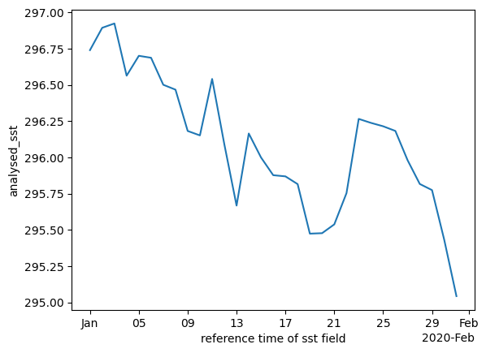

# set up bucket client
# stop annoying warnings
import warnings
warnings.filterwarnings("ignore", message="Your application has authenticated using end user credentials")
from google.cloud import storage
from pathlib import Path
# === Set these ===
bucket_name = "nmfs_odp_nwfsc"
# Create client and bucket
client = storage.Client(project="noaa-gcs-public-data")
bucket = client.bucket(bucket_name)Uploading to Google Cloud Storage
Uploading to Google Cloud
Prerequisites
The py-rocket-geospatial-2 image on the NMFS Openscapes JuptyerHub is already set up with this.
pip install google-cloud-storagesudo apt-get install google-cloud-sdk
You need to have the Storage Admin role on the bucket or on the folder of a bucket. For example, if you will be uploading to the NOAA Fisheries Google NODD Public Buckets, you will need to be added as a Storage Admin role to a specific folder.
Authenticate
Run the following in a terminal. It will open and you authenticate there. It will save application_default_credentials.json to ~/.config/gcloud. If you do not have google-cloud-sdk installed, you can install somewhere (like locally) and then copy that file and create it here (in hub or whereever you are running this tutorial).
gcloud auth application-default login
Upload a netcdf file
The code to create littlecube.nc is below.
Upload a netcdf file
The code to create littlecube.nc is below.
# Set the file you want to test with
test_file = Path("littlecube.nc") # change this if using a different file
destination_prefix = "CB/test"
# Create blob and upload
blob_path = f"{destination_prefix}/{test_file.name}"
blob = bucket.blob(blob_path)
blob.upload_from_filename(str(test_file))
print(f"Uploaded {test_file.name} → gs://{bucket_name}/{blob_path}")Uploaded littlecube.nc → gs://nmfs_odp_nwfsc/CB/test/littlecube.nctest_file = Path("littlecube.nc") # change this if using a different file
destination_prefix = "CB/test"
# Create blob and upload
blob_path = f"{destination_prefix}/{test_file.name}"
blob_path'CB/test/littlecube.nc'Lazy loading one file
import xarray as xr
import fsspec
url = "gcs://nmfs_odp_nwfsc/CB/test/littlecube.nc"
fs = fsspec.filesystem("gcs", anon=True) # anon=True since this is a public bucket
f = fs.open(url, mode="rb") # Open file
ds = xr.open_dataset(f) # lazy loadds<xarray.Dataset> Size: 8kB
Dimensions: (lat: 8, lon: 8, time: 31)
Coordinates:
* lat (lat) float32 32B 33.62 33.88 34.12 ... 34.88 35.12 35.38
* lon (lon) float32 32B -75.38 -75.12 -74.88 ... -73.88 -73.62
* time (time) datetime64[ns] 248B 2020-01-01 ... 2020-01-31
Data variables:
analysed_sst (time, lat, lon) float32 8kB ...ds["analysed_sst"].mean(dim="time").plot()
ds["analysed_sst"].mean(dim=["lat", "lon"]).plot()
# when completely done
f.close() # close the file when you're completely doneSummary
We uploaded netcdf and Zarr directory to Google Cloud. Some workflows are based on downloading netcdf files, so I uploaded those but if you want to interact with the data by only getting the subsets that you need, then you will want to work with the Zarr files. Unfortunately, R tooling does not yet work well with Zarr files, but it is catching up.
import gcsfs
fs = gcsfs.GCSFileSystem(token="/home/jovyan/.config/gcloud/application_default_credentials.json")
bucket_prefix = "nmfs_odp_nwfsc/CB/nwm_daily_means/wr18"
# List all files under the prefix
files = fs.ls(bucket_prefix)
# Delete each file
for f in files:
print(f"Deleting {f}")
fs.rm(f, recursive=True)
print("✅ Folder deleted.")Create a test file
import earthaccess
short_name = 'AVHRR_OI-NCEI-L4-GLOB-v2.1'
version = "2.1"
date_range = ("2020-01-02", "2020-01-31")
results = earthaccess.search_data(
short_name = short_name,
version = version,
temporal = date_range,
cloud_hosted=True
)
fileset = earthaccess.open(results)
import xarray as xr
ds = xr.open_mfdataset(fileset)
dc = ds['analysed_sst'].sel(lat=slice(33.5, 35.5), lon=slice(-75.5, -73.5))
dc.to_netcdf("littlecube.nc")31